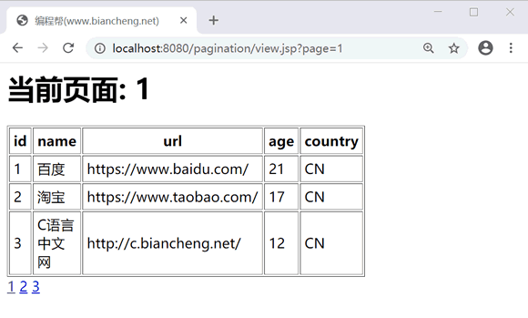

JSP分页功能
当数据有几万、几十万甚至上百万时，用户必须要拖动页面才能浏览更多的数据，很大程度的影响了用户体验。这时可以使用分页来显示数据，能够使数据更加清晰直观，且不受数量的限制。
分页的方式主要分为两种：
Website 类的代码如下：
WebsiteDao 代码如下：
分页的方式主要分为两种：
- 将查询结果以集合等形式保存在内存中，翻页时从中取出一页数据显示。该方法可能导致用户浏览到的是过期数据，且如果数据量非常大，查询一次数据就会耗费很长时间，存储的数据也会占用大量的内存开销。
- 每次翻页时只从数据库中检索出本页需要的数据。虽然每次翻页都需要查询数据库，但查询的记录数相对较少，总体开销不大，再配以连接池等技术进行优化，可以达到比较高的效率。
实现分页步骤
实现数据的分页显示，需要以下几个关键步骤：1）确定每页显示的数据数量
确定每页显示的记录条数，即每次从数据库中需要查询出多少条记录用于页面显示。通常这个数量可以在开发时定义好，也可以由用户来选择。2）计算显示的总页数
根据每页显示的记录条数计算总页数，即会产生多少页数据。显示的记录数量是已知的，而数据库中符合条件的记录总数是未知的，因此想要得到总页数，需要先得到符合条件的记录总数。3）编写SQL语句
使用相应的 SQL 语句实现分页需求。例如，MySQL 中的 LIMIT 子句，SqlServer 中的 TOP、Oracle 中的 ROWNUM 等。注意：本节使用的是 MySQL 数据库。不同的数据库厂商实现分页的 SQL 语句会存在差异，因此在实际应用中根据数据库的不同，需要修改相应的 SQL 语句。
示例
创建 website 数据表，并插入数据。点击下载 SQL 文件（下载后需要解压）。Website 类的代码如下：
package net.biancheng.entity;
public class Website {
private int id;
private String name;
private String url;
private int age;
private String country;
public int getId() {
return id;
}
public void setId(int id) {
this.id = id;
}
public String getName() {
return name;
}
public void setName(String name) {
this.name = name;
}
public String getUrl() {
return url;
}
public void setUrl(String url) {
this.url = url;
}
public int getAge() {
return age;
}
public void setAge(int age) {
this.age = age;
}
public String getCountry() {
return country;
}
public void setCountry(String country) {
this.country = country;
}
}
基于方便代码管理的考虑，将有关分页的数据封装到一个 Page 类中，其中包括每页显示的数据数量、数据的总数量、显示的总页数、当前页码、每页显示的数据集合。Page 代码如下：
package net.biancheng.utils;
import java.util.List;
import net.biancheng.entity.Website;
public class Page {
// 总页数
private int totalPageCount = 0;
// 页面大小，即每页显示记录数
private int pageSize = 3;
// 记录总数
private int totalCount;
// 当前页码
private int currPageNo = 1;
// 每页网站集合
private List<Website> websiteList;
public int getTotalPageCount() {
return totalPageCount;
}
public void setTotalPageCount(int totalPageCount) {
this.totalPageCount = totalPageCount;
}
public int getPageSize() {
return pageSize;
}
public void setPageSize(int pageSize) {
if (pageSize > 0)
this.pageSize = pageSize;
}
public int getTotalCount() {
return totalCount;
}
public void setTotalCount(int totalCount) {
if (totalCount > 0) {
this.totalCount = totalCount;
// 计算总页数
totalPageCount = this.totalCount % pageSize == 0 ? (this.totalCount / pageSize)
: (this.totalCount / pageSize + 1);
}
}
public int getCurrPageNo() {
if (currPageNo == 0)
return 0;
return currPageNo;
}
public void setCurrPageNo(int currPageNo) {
if (currPageNo > 0)
this.currPageNo = currPageNo;
}
public List<Website> getWebsiteList() {
return websiteList;
}
public void setWebsiteList(List<Website> websiteList) {
this.websiteList = websiteList;
}
}
在 setTotalCount() 方法中，根据记录总数和每页显示记录数计算出总页数，使用三元运算符？：进行处理。如果记录总数能被每页显示记录数整除，则总页数为两者的商，如果不能被整除，则余出的记录数单独列为一页，总页数为两者的商再加 1。WebsiteDao 代码如下：
package net.biancheng.dao;
import java.util.List;
import net.biancheng.entity.Website;
public interface WebsiteDao {
// 查询总条数
public int getTotcalCount();
//根据起始下标和每页显示数量查询数据
public List<Website> getPageWebsiteList(int pageNo, int pagesize);
}
WebsiteDaoImpl 代码如下：
package net.biancheng.dao;
import java.sql.Connection;
import java.sql.DriverManager;
import java.sql.PreparedStatement;
import java.sql.ResultSet;
import java.sql.SQLException;
import java.util.ArrayList;
import java.util.List;
import net.biancheng.entity.Website;
public class WebsiteDaoImpl implements WebsiteDao {
/**
* 连接数据库
*/
public static Connection getConnection() {
Connection con = null;
try {
Class.forName("com.mysql.jdbc.Driver");
con = DriverManager.getConnection("jdbc:mysql://localhost:3306/test", "root", "root");
} catch (Exception e) {
e.printStackTrace();
}
return con;
}
/**
* 查询总条数
*/
@Override
public int getTotcalCount() {
int count = 0;
try {
Connection con = getConnection();
String sql = "SELECT COUNT(id) FROM website";
PreparedStatement ps = con.prepareStatement(sql);
ResultSet rs = ps.executeQuery();
rs.next();
count = rs.getInt(1);
} catch (SQLException e) {
e.printStackTrace();
}
return count;
}
@Override
public List<Website> getPageWebsiteList(int pageNo, int pagesize) {
PreparedStatement ps;
ResultSet rs;
List<Website> list = new ArrayList<Website>();
try {
Connection con = getConnection();
String sql = "SELECT * FROM website LIMIT" + (pageNo - 1) * pagesize + "," + pagesize;
ps = con.prepareStatement(sql);
System.out.println(sql);
rs = ps.executeQuery();
while (rs.next()) {
Website website = new Website();
website.setId(rs.getInt(1));
website.setName(rs.getString(2));
website.setUrl(rs.getString(3));
website.setAge(rs.getInt(4));
website.setCountry(rs.getString(5));
list.add(website);
}
con.close();
} catch (Exception e) {
e.printStackTrace();
}
return list;
}
}
view.jsp 页面代码如下：
<%@ page language="java" contentType="text/html; charset=UTF-8"
pageEncoding="UTF-8"%>
<%@ page
import="java.util.*,net.biancheng.dao.*,net.biancheng.entity.*,net.biancheng.utils.*"%>
<html>
<head>
<title>编程帮(www.biancheng.net)</title>
</head>
<body>
<%
WebsiteDao websiteDao = new WebsiteDaoImpl();
String pageNo = request.getParameter("page") != null ? request.getParameter("page") : "1";
int currPageNo = Integer.parseInt(pageNo);
Page p = new Page();
p.setCurrPageNo(currPageNo);
p.setPageSize(3);
p.setTotalCount(websiteDao.getTotcalCount());
List<Website> websiteList = websiteDao.getPageWebsiteList(p.getCurrPageNo(), p.getPageSize());
p.setWebsiteList(websiteList);
out.print("<h1>当前页面: " + currPageNo + "</h1>");
out.print("<table border='1' cellpadding='4' width='60%'>");
out.print("<tr><th>id</th><th>name</th><th>url</th><th>age</th><th>country</th></tr>");
for (Website e : websiteList) {
out.print("<tr><td>" + e.getId() + "</td><td>" + e.getName() + "</td><td>" + e.getUrl() + "</td><td>"
+ e.getAge() + "</td><td>" + e.getCountry() + "</td></tr>");
}
out.print("</table>");
for (int i = 1; i <= p.getTotalPageCount(); i++) {
%>
<a href="view.jsp?page=<%=i%>"><%=i%></a>
<%
}
%>
</body>
</html>
运行结果如下：

关注公众号「站长严长生」，在手机上阅读所有教程，随时随地都能学习。内含一款搜索神器，免费下载全网书籍和视频。

微信扫码关注公众号